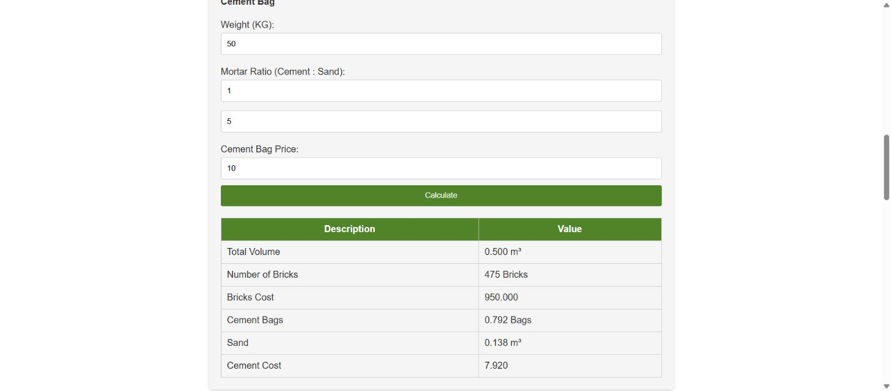

Dimension of Wall (Feet)

Brick Dimensions (Inches)

Cement Bag
| Description | Value |
|---|---|
| Total Volume | |
| Number of Bricks | |
| Bricks Cost | |
| Cement Bags | |
| Sand | |
| Cement Cost |
Ozairwebs / Public development tools
Enter your dimensions to make a preliminary estimate. Review the assumptions below before using the result.
The following Brick Calculator tool helps estimate the total number of bricks, cement bags, and sand required for constructing a wall based on user inputs. It also calculates the cost of the bricks and cement based on user-specified prices.
| Description | Value |
|---|---|
| Total Volume | |
| Number of Bricks | |
| Bricks Cost | |
| Cement Bags | |
| Sand | |
| Cement Cost |
Uses the legacy brick adjustment factor 0.94921875, dry-mortar allowance 33% of wall volume and cement density 1,440 kg/m³. Costs use your entered unit prices; no currency conversion is performed.
This tool supports preliminary quantity planning. Mix design, structural suitability, site waste, joint dimensions and actual purchasing quantities need project-specific confirmation. Labour, delivery, taxes and other materials are not included.
Calculation details and examples · Discuss a custom calculator
Use a wall 3 m long, 2 m high and 100 mm thick, deduct 1 m² of openings, and enter bricks 200 × 100 × 50 mm. Net wall volume is 0.5 m³. The legacy brick adjustment gives 475 whole bricks. A 1:5 mortar ratio and 50 kg bag give 0.792 cement bags and 0.1375 m³ sand, displayed as 0.138 m³.
With a brick price of 2 and a cement bag price of 10, the displayed costs are 950 and 7.92. These are in your price currency; the calculator does not convert currencies.
The total opening area is subtracted from length multiplied by height, before multiplying by wall thickness. Openings must be smaller than the gross wall area.
No. This version retains a legacy brick adjustment factor of 0.94921875 and dry mortar allowance of 33% of net wall volume. Joint thickness and bond are not configurable, so confirm suitability for the actual wall.
The default brick sizes are rounded separately. Enter exact converted dimensions to compare equivalent inputs; both paths use the same mortar factor and cement-density assumption.
No. It includes the entered brick and cement prices only. Sand cost, labour, delivery, taxes, waste and other materials are outside the calculation. Cement bag output is fractional; purchase rounding remains your decision.
The image shows a real browser calculation using the example above.
